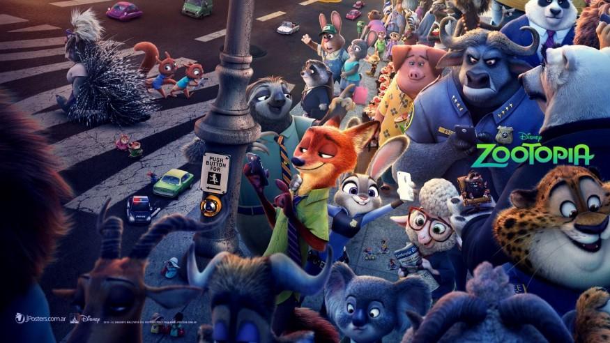

Virtual Production: The Future of Filmmaking
If you haven’t heard about it already, virtual production is a new technology that will change the way we make movies. Virtual production (or v-prod in short) uses digital technology to help filmmakers with pre-production.
Virtual production is an innovation that allows film producers and directors to create a film’s set in a digital environment before it even goes on the physical set. Initially, this was thought to be impossible, but after years of research and development, virtual production was finally realized. Virtual production is such an integral part of the filmmaking process now that some people even consider it to be the missing link between preproduction and postproduction. As groundbreaking as it seems, virtual production has many advantages for both filmmakers and the audience.
Since the invention of the cinema, film making has traditionally been a physical process. The actors would perform on set and the crew would be put into place to capture the raw footage that was then developed into a movie. Today virtual production is waking up a new generation of filmmakers. Through the use of virtual reality (VR) technologies like Unity, Unreal, etc., filmmakers, modelers, architects, and designers can collaborate together to create amazing and sometimes even superior experiences than was ever possible before.
In virtual production, we can create worlds at any scale and inhabit them with characters that are all created and rendered in real-time. This enables the director to move freely around the set, and also ingest lighting changes, camera moves, camera lenses and not worry about whether those adjustments will introduce errors at render time. All of the error checkings is handled in real-time inside of this virtual production software, which allows Jon to focus on what he’s trying to capture.
Game engines like Unity, Unreal are very useful for designing high quality production sets for filming which looks like a real location.
Check out the following video:
Virtual production is the process of capturing footage and integrating visual effects, typically by way of a post-production studio, rather than on set with film cameras.
This is in contrast to physical production where units actually go out into the field to shoot live-action.
Virtual productions can be done with green screen or bluescreen filming to place actors against virtual sets and backgrounds. Later these elements are “placed” (or composited) into the final film from a studio. This technique can be used to create or augment many types of visual effects: monsters, environments, alien worlds, etc.
Virtual production is making the film industry shift from film equipment to information technology. The reason for virtual production is to reduce the costs and also make it possible to create films that couldn’t be done before using only physical objects. According to a paper written by Karin Musier-Forsyth at the 39th International Conference on Audiovisual Presentation, she explains the advantages of virtual production comparing to the traditional way of making films.
However, Ms. Musier-Forsyth did not cover what will happen in the future when everything moves toward being virtual. To answer this question we must look back at history because it repeats itself so once again everything starts with a technological improvement in the film industry.
So if you are a Gamer who wants to learn Game Design Engines like Unreal or Unity or any other game design engine then you can use these engines for other things too. And by things I mean Film.
And if you are working in video game production you can use all of that knowledge to enter in the film industry too. If you are a freelancer, for example, you have exactly the same skills as designers and producers of motion pictures studios. And there is another good news: companies/studios like Disney and Pixar have their own versions of game engines like Unreal and Unity too! They’ve even released assets that you can use for free on the marketplaces (Spark, by Disney).
How does Virtual Production work?
Virtual production computer graphics is a technique that uses the power of computer graphics to create visual effects for the movie. The most common use of virtual production is visual effects, but many other applications exist and expand every day. The main function of CGI in this discipline is to generate images based on set design or previsualization. This type of work includes the altering of images, such as through rotoscoping (tracing animation drawings frame by frame).
The platform makes use of a combination of immersive technologies such as virtual reality and augmented reality as well as CGI and game-engine technologies, allowing filmmakers to "see their scenes unfold as they are composed and captured on set".
"Our latest developments enable final pixel quality in real time, which empowers content creators across all stages of production, and equip them to shoot their visual effects in camera. It’s a game changer." — Marc Petit, general manager at Epic Games
Thanks for reading.
About the Author :

Ashish Jagrawal
I'm a Programmer, Designer, and is ardent about physics, and always curious about everything that I saw. Trying to push myself to the limits.
Find this blog helpful? then share it with your contacts and if you find any error or mistake then do mail us Click here.